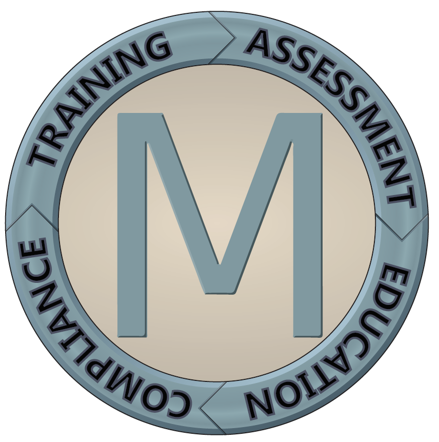
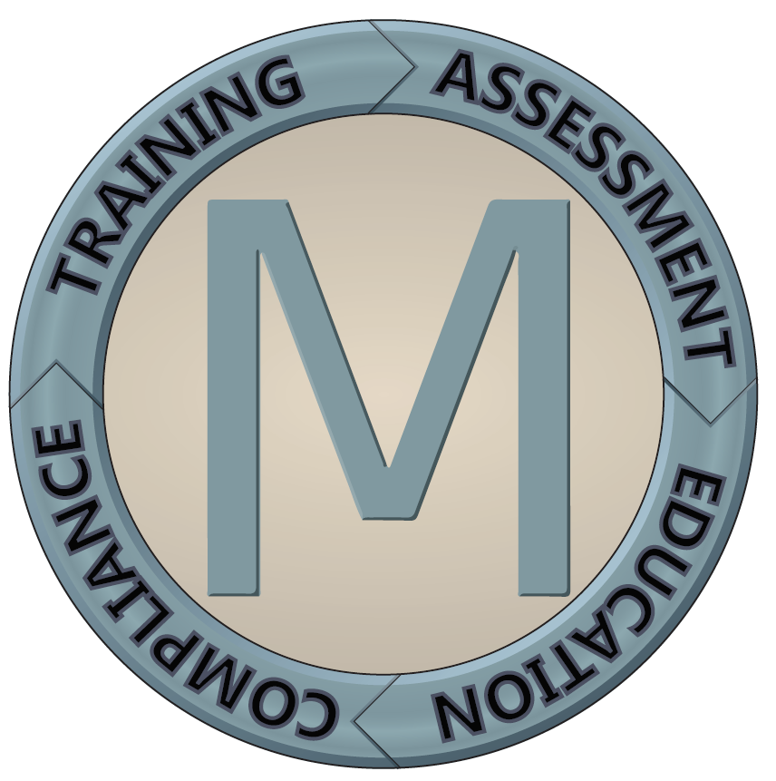
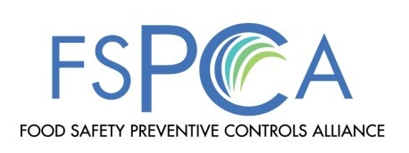

COVID-19 Update
First and foremost, I hope you are all taking care of yourselves and your families during this uncertain time. As you know, the COVID-19 situation is changing quickly.
I know this is an unsettling time for many of your co-workers and friends around the world. It’s natural to be anxious in a situation like this, especially for those of us who travel a lot for work. But we must base our decisions on sound science, not fear. We are taking reasonable and evidence-based measures to minimize risks to our employees, contractors, and clients.
I’d like to provide you with alternatives to on site consulting and training. I want to offer virtual training and/or consulting. This way no one is put at risk.
Sites can use their own virtual systems such as Blue Jeans, Skype, GoToMeeting, Zoom or other means. Sessions can be flexible to meet your ever changing production schedule and availability of employees.
I offer consultation for BRC and SQF. I can help develop already existing procedures, forms or guidance on developing new procedures etc. to meet the scheme requirements. I have currently been doing internal audits of existing food safety systems to meet BRC and SQF requirements. In addition, I can train your food safety team in HACCP. And also, in PCQI for Human Foods. For this I suggest the option of doing the offsite webinar training then a virtual one day part 2 training.
Fees for the consulting and training can be discussed at the time a class or consultation is confirmed.
The BRC has put out several good guidance materials to help your facility safely protect your employees and provide confidence to your customers that you are doing your due diligence to ensure that there is no risk of finished products produced at your plant.

About
Jim has over 30 years of quality, GMP, HACCP and GFSI food safety food industry experience. His career includes occupations as an Assistant Plant Manager, Quality Manager, GFSI food safety auditor, Quality program development and trainer for numerous facility employees and management. Most recently Jim was the BRC Certification Manager for AIB International where he managed the audits, BRC audit technical reviews, auditor competency, and staffing. Jim's food sector experience includes bakeries, dry ingredients, Packaging (food contact and non contact), beverages (alcoholic and non alcoholic), confections, dairy and flavors.
Services
- Gap assessments for BRC and SQF food and packaging
- Pre assessments for BRC, SQF and FSSC
- Program development for BRC Food and Packaging
- GMP program development
- HACCP program development
- Quality Program development
Courses
Off-Site Courses
Course outline:
This two-day course will enable you to undertake internal audits and prepare companies for third party audits. It's delivered via a series of workshop-led discussions, presentations and an interactive case study. During the live case study, you will be given feedback and support to enable you to carry out an audit at your own workplace. You will be assessed throughout the course (50%) and you will also need to undertake a work place audit and submit an audit report for assessment (50%). You will need to gain a 75% pass for this assessment.The course is aimed at:
- Quality and technical managers
- Operations managers
- Staff responsible for managing an internal auditing schedule
- Staff responsible for undertaking internal audits as required by BRC Global Standards
At the end of the course you will:
- Understand the roles and responsibilities of auditors
- Be able to plan and conduct an internal audit
- Know how to write concise, accurate and factual audit reports
- Be able to undertake audit follow-up activities
Course outline:
FSMA has been signed into law. Its focus is on the prevention of food illness. Food companies will be required to have a food safety plan in place that meets the FSMA requirements. The plan needs to be developed by a Preventive Controls Qualified Individual (PCQI).
The Current Good Manufacturing Practice, Hazard Analysis, and Risk-based Preventive Controls for Human Food regulation (referred to as the Preventive Controls for Human Food regulation) is intended to ensure safe manufacturing/processing, packing and holding of food products for human consumption in the United States.
This course, developed by FSPCA, is the “standardized curriculum” recognized by FDA; successfully completing this course is one way to meet the requirements for a PCQI.
To becoming qualified as a PCQI you need to take the standardized training course taught by a "Preventive Controls Lead Instructor". This is an instructor that has applied to FSPCA, been accepted and completed the Lead Instructor training course.
I am a Lead Instructor for the FSPCA Preventive Controls for Human Food Course authorized to teach this standardized course, and will be offering the 2.5 day Preventive Controls for Human Food Course.
Please contact me if you would like to set up a private or public course.
If you're interested in taking this class please follow the instructions in this document.
On-Site Courses and Training
Training at Your Location
Delivered in a controlled environment:Having training delivered conveniently to your work-site maintains the confidentiality of your systems and processes and enables the learning to be relevant to your workplace context. This strategy is particularly beneficial if you are seeking to review and improve on your operation and management systems. Training employees on-site enhances their learning capability by focusing on developing skills that are relevant to their work role. On-site delivery supports better transfer of knowledge and skills to the workplace.
Build on team dynamics:By drawing on the experiences of team members and engaging in structured professional conversations, your employees become more receptive towards change and embracing new initiatives. Reduced expenses: Save on travel and accommodation expenses and minimize the downtime involved with training employees off-site.
Greater information retention:One of the most fundamental methodologies in effective adult learning is team interaction. Review of learning through interactive discussions between participants after the completion of formal training is encouraged by our facilitators to enhance learning outcomes.
Request for Onsite Training Quote Onsite training at your company's location is an excellent option for 5 or more attendees:- Training focused on your company's processes and products
- eliminate employee travel costs and lost time - our trainers come to your site
- increase teamwork and ensure consistency of training within your group
Refund Policy
Marasco Food Safety Consultant LLC realizes that it may be necessary for registrants to cancel or postpone training under certain circumstances. 30 days or longer before the start of the course, you may cancel and receive a full refund, or transfer to another session. In fairness to our other course attendees, please note the following Cancellation and Transfer Policy.
- Course fees are in USD or CAD based upon location of class.
- Webinar Course fees are non-refundable.
- Cancellations made within 30 days of the course will be payable at 50% of the tuition fee.**
- Cancellations made within 14 days of the course are non-refundable.**
- Registrants who fail to attend their course are liable for 100% of the course fee.**
- Transfers will not be allowed within 14 days of the course begin date.